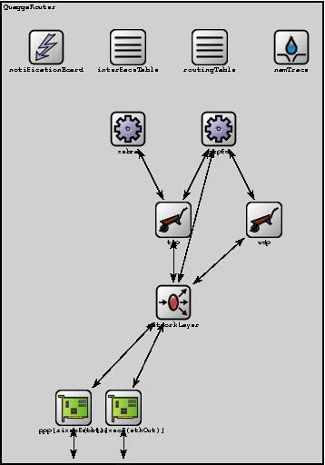
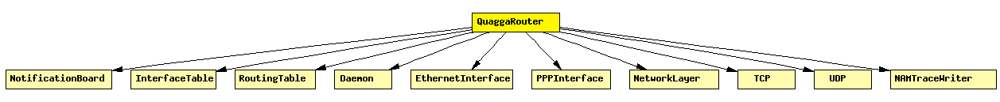

File: Nodes/INET/QuaggaRouter.ned
Quagga-based IP router.
The following diagram shows usage relationships between modules, networks and channels. Unresolved module (and channel) types are missing from the diagram. Click here to see the full picture.
If a module type shows up more than once, that means it has been defined in more than one NED file.
| Daemon | (no description) |
| EthernetInterface | Ethernet network interface. Corresponds to the prototype NetworkInterface. Complements EtherMAC and EtherEncap with an output queue for QoS and RED support. |
| InterfaceTable | Keeps the table of network interfaces. |
| NAMTraceWriter | When placed inside a host or router, it writes a NAM trace, based on notifications it receives via the NotificationBoard. Expects to find a NAMTrace module named "nam" at network level. |
| NetworkLayer | Network layer of an IP node. |
| NotificationBoard | Using NotificationBoard, modules can now notify each other about "events" such as routing table changes, interface status changes (up/down), interface configuration changes, wireless handovers, changes in the state of the wireless channel, mobile node position changes, etc. |
| PPPInterface | PPP interface. Complements the PPP module with an output queue for QoS and RED support. |
| RoutingTable | Stores the routing table. (Per-interface configuration is stored in InterfaceTable.) |
| TCP | TCP protocol implementation. Supports RFC 793, RFC 1122, RFC 2001. Compatible with both IPv4 and IPv6. |
| UDP |
| Name | Type | Description |
|---|---|---|
| namid | numeric | |
| routingFile | string | |
| routingDaemon | string | "ripd", "ospfd", etc. |
| Name | Direction | Description |
|---|---|---|
| in [ ] | input | |
| out [ ] | output | |
| ethIn [ ] | input | |
| ethOut [ ] | output |
| Name | Type | Description |
|---|---|---|
| networkLayer.proxyARP | bool | |
| networkLayer.ip.procDelay | numeric const | |
| networkLayer.arp.retryTimeout | numeric | number seconds ARP waits between retries to resolve an IP address |
| networkLayer.arp.retryCount | numeric | number of times ARP will attempt to resolve an IP address |
| networkLayer.arp.cacheTimeout | numeric | number seconds unused entries in the cache will time out |
| ppp[*].queueType | string | |
| eth[*].queueType | string | |
| eth[*].mac.promiscuous | bool | if true, all packets are received, otherwise only the ones with matching destination MAC address |
| eth[*].mac.address | string | MAC address as hex string (12 hex digits), or "auto". "auto" values will be replaced by a generated MAC address in init stage 0. |
| eth[*].mac.txrate | numeric | maximum data rate supported by this station (bit/s); actually chosen speed may be lower due to auto- configuration. 0 means fully auto-configured. |
| eth[*].mac.duplexEnabled | bool | whether duplex mode can be enabled or not; whether MAC will actually use duplex mode depends on the result of the auto-configuration process (duplex is only possible with DTE-to-DTE connection). |
| eth[*].mac.writeScalars | bool | enable/disable recording statistics in omnetpp.sca |
| eth[*].encap.writeScalars | bool | enable/disable recording statistics in omnetpp.sca |
| tcp.mss | numeric const | maximum segment size |
| tcp.advertisedWindow | numeric const | in bytes (Note: normally, NIC queues should be at least this size) |
| tcp.tcpAlgorithmClass | string | TCPTahoe/TCPReno/TCPNoCongestionControl/DumbTCP |
| tcp.sendQueueClass | string | TCPVirtualDataSendQueue/TCPMsgBasedSendQueue |
| tcp.receiveQueueClass | string | TCPVirtualDataRcvQueue/TCPMsgBasedRcvQueue |
| tcp.recordStats | bool | recording seqNum etc. into output vectors on/off |
| zebra.fsroot | string | |
| ospfd.fsroot | string |
module QuaggaRouter parameters: namid: numeric, routingFile: string, routingDaemon: string; // "ripd", "ospfd", etc. gates: in: in[]; out: out[]; in: ethIn[]; out: ethOut[]; submodules: namTrace: NAMTraceWriter; parameters: namid = namid; display: "p=330,60;i=block/sink"; notificationBoard: NotificationBoard; display: "p=60,60;i=block/control"; interfaceTable: InterfaceTable; display: "p=150,60;i=block/table"; routingTable: RoutingTable; parameters: IPForward = true, routerId = "auto", routingFile = routingFile; display: "p=240,60;i=block/table"; networkLayer: NetworkLayer; gatesizes: ifIn[sizeof(out)+sizeof(ethOut)], ifOut[sizeof(out)+sizeof(ethOut)]; display: "p=200,341;i=block/fork;q=queue"; ppp: PPPInterface[sizeof(out)]; display: "p=90,457,row,110;q=l2queue;i=block/ifcard"; eth: EthernetInterface[sizeof(ethOut)]; display: "p=145,457,row,110;q=l2queue;i=block/ifcard"; tcp: TCP; display: "p=200,250;i=block/wheelbarrow"; udp: UDP; display: "p=300,250;i=block/wheelbarrow"; zebra: Daemon; parameters: server = "zebra"; display: "p=150, 150;i=block/cogwheel"; ospfd: Daemon; parameters: server = routingDaemon; display: "p=250, 150;i=block/cogwheel"; connections nocheck: // connections to network outside for i=0..sizeof(out)-1 do in[i] --> ppp[i].physIn; out[i] <-- ppp[i].physOut; ppp[i].netwOut --> networkLayer.ifIn[i]; ppp[i].netwIn <-- networkLayer.ifOut[i]; endfor; tcp.to_ip --> networkLayer.TCPIn; tcp.from_ip <-- networkLayer.TCPOut; udp.to_ip --> networkLayer.UDPIn; udp.from_ip <-- networkLayer.UDPOut; zebra.tcpIn <-- tcp.to_appl++; zebra.tcpOut --> tcp.from_appl++; ospfd.tcpIn <-- tcp.to_appl++; ospfd.tcpOut --> tcp.from_appl++; ospfd.udpIn <-- udp.to_app++; ospfd.udpOut --> udp.from_app++; ospfd.ipOut --> networkLayer.OSPFIn; ospfd.ipIn <-- networkLayer.OSPFOut; for i=0..sizeof(ethOut)-1 do ethIn[i] --> eth[i].physIn; ethOut[i] <-- eth[i].physOut; eth[i].netwOut --> networkLayer.ifIn[sizeof(out)+i]; eth[i].netwIn <-- networkLayer.ifOut[sizeof(out)+i]; endfor; endmodule